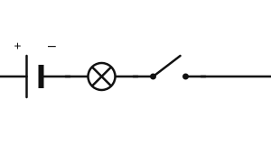
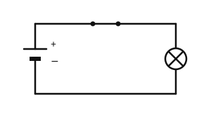

Schaltzeichen und Schaltplan
Mit einem KI-Tutor lernen
Ein KI-Tutor erklärt dir diese Seite und hilft dir bei den Übungen. Wähl deinen Assistenten:
Mit Claude öffnen Mit ChatGPT öffnen Mit Mistral Vibe öffnen
Du nutzt dein eigenes Konto beim Anbieter. Der Assistent ist kein Angebot von lernapps.net: lernapps liefert nur Inhalte und Übungen. Die Wahl gilt für alle Seiten, nur auf diesem Gerät.
Eine gemeinsame Zeichensprache
Die Zeichnungen auf den letzten Seiten waren schon Schaltpläne. Ein Stromkreis ist schwer genau zu malen, wenn man jede Batterie und jeden Schalter abzeichnet. Darum nutzt man in der Physik für jedes Bauteil ein einfaches Zeichen, damit alle den Plan gleich lesen.
Danach kannst du einen Stromkreis als Schaltplan zeichnen und einen Schaltplan lesen.
Vier Schaltzeichen
Die Zeichnung zeigt vier Schaltzeichen. Jedes ist mit einer Zahl markiert; die Liste darunter nennt das Bauteil. Zu jedem Zeichen gehören zwei Anschlüsse, hier links und rechts.

- Batterie
- Lampe
- Schalter
- Leitung (Kabel)
Schau dir an, woran du jedes Zeichen erkennst.
Quelle: eigene Zeichnung. Lizenz: CC-BY-4.0.Beim Zeichnen eines Schaltplans gelten diese Regeln:
- Kabel sind gerade Linien mit rechten Winkeln.
- Jedes Bauteil bekommt sein Schaltzeichen.
- Der Plan zeigt nur, wie die Bauteile verbunden sind. Wo die Teile wirklich liegen und wie lang die Kabel sind, steht nicht im Plan.
- Schaltplan
Ein Schaltplan ist eine Zeichnung eines Stromkreises, in der jedes Bauteil durch sein Schaltzeichen dargestellt ist.
Beispiel: Einen Schaltplan lesen
Batterie, Schalter und Lampe
Der Plan zeigt eine Batterie, einen Schalter und eine Lampe in einem Kreis. Du liest ihn, indem du dem Weg folgst:

Folge dem Weg vom Pluspol der Batterie durch den Schalter und die Lampe zurück zum Minuspol.
Quelle: eigene Zeichnung. Lizenz: CC-BY-4.0.- Vom Pluspol der Batterie geht das Kabel zum Schalter.
- Die Klinge liegt waagerecht, der Schalter ist geschlossen.
- Weiter geht es zur Lampe und über das untere Kabel zurück zum Minuspol.
- Der Weg ist ohne Lücke, die Lampe leuchtet.
Übung
Übung
Lösung
Richtige Antwort: Kreis mit Kreuz – Lampe; Ein langer dünner und ein kurzer dicker Strich – Batterie; Zwei Punkte mit schräg geklappter Klinge – Schalter; Eine einfache gerade Linie – Leitung (Kabel)
Die Batterie erkennst du an den zwei unterschiedlichen Strichen, die Lampe am Kreis mit Kreuz, den offenen Schalter an der geklappten Klinge und die Leitung an der einfachen Linie.
Mehr dazu:
Übung
Lösung
Richtige Antwort: Die Aussage stimmt nicht.
Ein Schaltplan zeigt nur, wie die Bauteile verbunden sind. Länge und Lage der Kabel sind für den Plan egal.
Mehr dazu:
Übung
Lösung
Ja, denn ein Schalter ist geschlossen.
Ein geschlossener Schalter reicht nicht. Der zweite Schalter ist offen und unterbricht den Weg.
Nein, denn ein Schalter ist offen. richtige Antwort
Der untere Schalter ist offen. Damit ist der ganze Kreis unterbrochen.
Die Lampe leuchtet nur, wenn jeder Schalter im Kreis geschlossen ist.
Mehr dazu:
Übung
Lösung
Schaltplan A
Dort ist der Schalter geschlossen, nicht offen.
Schaltplan B richtige Antwort
Ein Schalter, die Klinge ist geklappt, also offen. Das passt zum Aufbau.
Schaltplan C
Hier sind zwei Schalter gezeichnet, der Aufbau hat aber nur einen.
Zum Aufbau gehören genau die drei Bauteile, und der Schalter ist offen gezeichnet.
Mehr dazu: